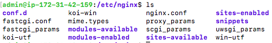

Sitios virtuales
Un servidor web puede estar sirviendo varias páginas web que pueden pertenecer a varios usuarios. A cada una de ellas la denominaremos un "sitio virtual". Veamos cómo podemos hacer que nuestro servidor sirva varias páginas.
El sitio web predeterminado
Cuando hemos instalado nuestro servidor web (sea Nginx o Apache2), se ha creado un sitio web predeterminado que se aloja en /var/www/html. Y si observamos sus permisos:
Por defecto esa carpeta y su contenido pertenecen a root y cualquiera puede entrar y leer. Esta es la configuración más segura si nuestro servidor web solo va a leer archivos. Pero puede plantearnos problemas si el servidor va a permitir la subida de ficheros o la modificación de archivos (por ejemplo a través de un gestor de contenido como Wordpress)
En el caso de Nginx, si ejecutamos un ps -ef | grep nginx observaremos 2 procesos:
root 415 1 0 18:13 ? 00:00:00 nginx: master process /usr/sbin/nginx -g daemon on; master_process on;
www-data 417 415 0 18:13 ? 00:00:00 nginx: worker process
Nginx sigue un modelo multiproceso compuesto por un proceso "master" y uno o varios procesos "workers".
- Master: inicia y controla los procesos trabajadores. Su función principal es leer la configuración de Nginx, gestionar las señales del sistema, y encargarse de la creación y supervisión de los procesos trabajadores. El usuario debe de ser root.
- Worker: son los que manejan las conexiones entrantes, procesan las solicitudes y sirven el contenido. El proceso trabajador se ejecuta bajo el usuario www-data (un usuario sin privilegios), lo que reduce el riesgo de seguridad al manejar conexiones de red.
El usuario www-data pertenece al grupo www-data. La configuración por defecto en la que /var/www/html pertecen a root es la más segura, pero hace necesario que sea el administrador o un usuario con privilegios (sudo) quien actualice los ficheros de la web. Lo normal es que sea un desarrollador o un usuario normal quien actualice esos ficheros. Por tanto, una práctica común es hacer que el directorio pertenezca al usuario www-data (o un usuario estándar del sistema) y al grupo www-data. Para ello podemos hacer lo siguiente:
En cuanto a los ficheros del grupo es importante que tengan los siguientes permisos:
-
Ficheros: 644 Esto permite que el propietario tenga permisos de lectura y escritura, y el grupo (es decir, www-data) y otros usuarios tengan solo permisos de lectura.
sudo chmod 644 /var/www/html/index.html
-
Directorios: 755 para que el servidor web pueda leer el contenido y navegar dentro de los directorios.
sudo chmod 755 /var/www/html/images
Comprueba los permisos del fichero index.nginx-debian.html y como el servidor sigue sirviendo la página web sin problemas.
El sitio web virtual
Al crear nuevos sitios virtuales vamos a suponer que cada sitio puede pertenecer a un usuario diferente y que solo él tendrá acceso a modificar los ficheros de su web. Vamos a hacer un ejemplo en el que seremos administradores de un servidor web que presta servicio a usuarios externos. A cada usuario le crearemos un usuario y le daremos un espacio de alojamiento para su sitio web.
Empezaremos creando un sitio virtual que llamaremos "sitio1" y será propiedad de "usuario1".
Crearemos el "usuario1" y haremos que su grupo sea www-data:
sudo useradd -m usuario1
sudo usermod -g www-data usuario1
sudo passwd usuario1 #Y le daremos passwd "usuario1"
En segundo lugar crearemos el espacio para el sitio virtual y le asignaremos el propietario y grupo correcto:
Y le daremos los permisos adecuados según vimos anteriormente:
Ahora hagamos que "usuario1" cree su primera página web index.html en /var/www/sitio1 entrando como "usuario1":
Y copiamos el siguiente contenido
<!DOCTYPE html>
<html>
<head>
<title>Sitio1!</title>
</head>
<body>
<h1>Bienvendido al sitio1!</h1>
<p> Este es el sitio1 de usuario1</p>
</body>
</html>
Comprueba que los permisos del fichero son 644 como comentamos anteriormente, de forma que solo usuario1 puede modificarlo pero www-data podrá leerlo.
Ahora volvemos a nuestro usuario administrador para realizar las configuraciones en Nginx para poder visualizar ese sitio virtual.
Modificamos la configuración
Los archivos de configuración de nginx los podemos encontrar en /etc/nginx.

En Nginx hay dos rutas importantes. La primera de ellas es sites-available, que contiene los archivos de configuración de los hosts virtuales o bloques disponibles en el servidor. Es decir, cada uno de los sitios webs que alberga el servido. La otra es sites-enabled, que contiene los archivos de configuración de los sitios habilitados, es decir, los que funcionan en ese momento.
Dentro de sites-available hay un archivo de configuración por defecto (default), que es la página que se muestra si accedemos al servidor sin indicar ningún sitio web o cuando el sitio web no es encontrado en el servidor (debido a una mala configuración por ejemplo). Esta es la página que nos ha aparecido en el apartado anterior.
Para que Nginx presente el contenido de nuestra web, es necesario crear un bloque de servidor con las directivas correctas. En vez de modificar el archivo de configuración predeterminado directamente, crearemos uno nuevo en /etc/nginx/sites-available/nombre_web:
Y el contenido de ese archivo de configuración:
server {
listen 80;
listen [::]:80;
root /var/www/sitio1;
index index.html index.htm index.nginx-debian.html;
server_name sitio1;
location / {
try_files $uri $uri/ =404;
}
}
Aquí la directiva root debe ir seguida de la ruta absoluta dónde se encuentre el archivo index.html de nuestra página web.
Y crearemos un archivo simbólico entre este archivo y el de sitios que están habilitados, para que se dé de alta automáticamente.
sudo ln -s /etc/nginx/sites-available/sitio1 /etc/nginx/sites-enabled/
ls -la /etc/nginx/sites-enabled/
Y reiniciamos el servidor para aplicar la configuración:
Comprobación del correcto funcionamiento
Como aún no poseemos un servidor DNS que traduzca los nombres a IPs, debemos hacerlo de forma local en nuestro equipo. Vamos a editar el archivo /etc/hosts de nuestra máquina anfitriona para que asocie la IP de la máquina virtual, a nuestro server_name.
Este archivo, en Linux, está en: /etc/hosts
Y en Windows: C:\Windows\System32\drivers\etc\hosts
Y deberemos añadirle la línea:
IP_PUBLICA_SERVIDOR sitio1
donde debéis sustituir la IP_PUBLICA_SERVIDOR por la que tenga vuestra máquina virtual. Si queremos tener varios dominios o sitios web en el mismo servidor nginx (es decir, que tendrán la misma IP) debemos repetir todo el proceso anterior con el nuevo nombre de dominio que queramos configurar.
Atención
Recuerda dejar tu archivo `/etc/hosts` o ` C:\Windows\System32\drivers\etc\hosts` cuando finalices las comprobaciones.
Si no tuvieras permisos en tu máquina host puedes lanzar google chrome pasándole las DNS que quieres que aplique de la siguiente forma
google-chrome --host-resolver-rules="MAP midominio.com 123.45.67.89, MAP otrodominio.com 98.76.54.32" --ignore-certificate-errors
En nuestro caso puedes usar lo siguiente sustituyendo IPSERVER por la IP pública de nuestra EC2 en AWS.
Cuestiones finales
Cuestión 1
¿Qué pasa si no hago el link simbólico entre sites-available y sites-enabled de mi sitio web?
Cuestión 2
¿Qué pasa si no le doy los permisos adecuados a /var/www/nombre_web?
Practica
Para ver si has comprendido bien la práctica crea un segundo sitio virtual que llamarás "sitio2" y que pertenezca al usuario "usuario2" y comprueba su funcionamiento.
Sitios web virtuales en Apache2
En esta práctica guiada hemos visto cómo crear sitios web virtuales en Nginx. ¿Sabrías tu crear sitios web virtuales en Apache2?
Abre tu máquina virtual EC2 de AWS que creamos como "servidorApache" y crea ahí 2 sitios web virtuales como los que hemos creado en Nginx:
- sitio1 perteneciente a usuario1
- sitio2 perteneciente a usuario2
Pista1
En Apache2 hay 2 directorios que se llaman /etc/apache2/sites-available/ y /etc/apache2/sites-enabled/
Pista2
Un fichero de configuración de sitio web en Apache2 tiene esta pinta:
```
<VirtualHost *:80>
ServerName sitiovirtual
DocumentRoot /var/www/sitiovirtual
<Directory /var/www/sitiovirtual>
AllowOverride All
Require all granted
</Directory>
</VirtualHost>
```
Pista3
En apache no hay que crear el enlace simbólico manualmente. Hay que habilitar el sitio mediante un comando que habilita el nuevo sitio virtual y además crea el enlace. Busca cuál es ese comando.
Sitios virtuales en servidor Nginx dockerizado
Ya hemos creado un par de sitios virtuales sobre un servidor Nginx corriendo sobre una EC2 en AWS. Ahora vamos a hacer lo mismo pero sobre un servidor dockerizado. En la práctica anterior ya creamos un servidor Nginx dockerizado, así que aprovecharemos todo lo que hicimos en esa práctica.
Vamos a crear, en primer lugar, la estructura de directorios que necesitaremos en la máquina que corre Docker. Dentro de nuestro home crearemos:
~
├── sitiosvirtuales/
│ ├── html
│ │ └── index.html
│ └── sitio1
│ └── index.html
└── nginxvirtual
├── Dockerfile
├── docker-compose.yaml
├── entrypoint.sh
└── sites-available
├── default
└── sitio1
En sitiosvirtuales incluiremos los ficheros html de nuestras páginas web.
En nginxvirtual los ficheros que necesitaremos para la dockerización.
En sites-available incluiremos los ficheros de configuración tanto del sitio por defecto como de nuestro "sitio1". Puedes copiar ambos de la instalación anterior sin docker.
Veamos el docker-compose.yaml
services:
nginx:
build: .
volumes:
- ../sitiosvirtuales:/var/www
- ./sites-available:/etc/nginx/sites-available
ports:
- 80:80
Es importante destacar que lo primero que se montan son los volumenes. Por tanto, cuando arranquemos el contenedor ya leerá el contenido de nuestros directorios en la máquina host.
Ahora vamos con el Dockerfile:
FROM debian:latest
MAINTAINER José Muñoz <j.munozjimeno@edu.gva.es>
# Actualizamos e instalamos Nginx
RUN apt update && apt upgrade -y && apt install -y nginx && \
rm -rf /var/lib/apt/lists/*
# Copiar el script de arranque
COPY entrypoint.sh /entrypoint.sh
# Hacer que sea ejecutable
RUN chmod +x /entrypoint.sh
# Exponemos el puerto 80
EXPOSE 80
# Establecer el script como el entrypoint
ENTRYPOINT ["/entrypoint.sh"]
La particularidad de este Dockerfile es que copia al interior de la imagen un fichero .sh y lo haremos ejecutable. Vemos que al final, en lugar de CMD hemos usado ENTRYPOINT. La diferencia es que CMD es el comando predeterminado, pero que puede sustituir por otro al lanzar el contenedor, pero ENTRYPOINT impide que se pueda lanzar otro comando y siempre lanzará ese. Es más estricto. Y vemos que lanzamos el comando entrypoint.sh. Eso nos permitirá que cada vez que se arranque el contenedor se ejecute lo que contenga ese script. Vamos a ver qué contiene.
entrypoint.sh
#!/bin/bash
# Borraremos todos los enlaces que ya existan en sites-enabled para poderlos crear luego nuevamente
rm -f /etc/nginx/sites-enabled/*
# Crear enlaces simbólicos de todos los archivos en sites-available a sites-enabled
for file in /etc/nginx/sites-available/*; do
ln -s "$file" /etc/nginx/sites-enabled/ || true
done
# Iniciar el servidor Nginx
nginx -g "daemon off;"
Ten en cuenta que este script se ejecutará cada vez que se arranque el contenedor y, por tanto, se crearán los enlaces simbólicos cada vez.
Ahora prueba a levantar el servicio con
docker-compose up -d
Y realiza las comprobaciones de funcionamiento como en el caso anterior. Recuerda que deberás modificar el fichero /etc/hosts de la máquina desde la que usas el navegador.
Cuando lo tengas, para el servicio con
docker-compose down
Y ahora hazlo tu mismo como antes. Crea un "site2" y levanta el servicio nuevamente.
Ejercicio
¿Serías capaz de levantar un Apache2 dockerizado que sirva los 2 sitios virtuales que has creado en `~/sitiosvirtuales/?